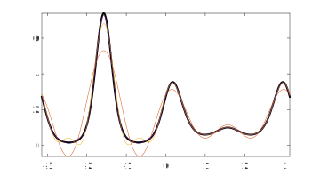
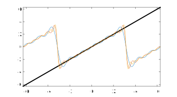
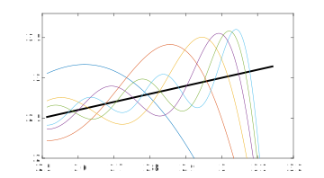

We rather breezily derived the formulas
\begin{equation*}
u_k(x) = \frac{1}{\sqrt{2\pi}} e^{ikx}, \quad k=0,\pm 1,\pm 2,\dots\text{,}
\end{equation*}
\begin{equation*}
f(x) = \sum_{k=-\infty}^\infty c_k u_k(x),\quad c_k = \int_{-\pi}^\pi \overline{u_k}(x) f(x)\, dx\text{,}
\end{equation*}
without regard to whether the infinite series implied here converges to the values of \(f\text{,}\) or indeed at all. Fortunately, only a reasonable assumption on \(f\) is needed. In particular, we will assume that \(f\) is continuous on each of a finite collection of closed intervals that combine to make \([-\pi,\pi]\text{.}\) That is, the function is allowed to have a finite number of jump discontinuities. We call such a function piecewise continuous.
Theorem 5.3.1 Convergence of Fourier series
Suppose \(f\) is a piecewise continuous function on \([-\pi,\pi]\text{.}\) Then the Fourier series above converges (1) to \(f(x)\) at all \(x\in(-\pi,\pi)\) at which \(f\) is continuous, (2) to
\begin{equation*}
\frac{1}{2} [ f(x^-) + f(x^+) ]
\end{equation*}
at all \(x\in(-\pi,\pi)\text{,}\) where \(f(x^\pm)\) are the one-sided limits of \(f\) at \(x\text{,}\) and (3) to
\begin{equation*}
\frac{1}{2} [ f(\pi^-) + f(-\pi^+) ]
\end{equation*}
at \(x=\pm\pi\text{.}\)
Each partial (i.e., truncated) sum of the Fourier series is a continuous function that is periodic over \([-\pi,\pi]\text{,}\) and its limit has the same property. It does the best we could hope for, getting the correct value at every point of continuity and "splitting the difference" at the jumps. These jumps include a lack of periodicity in the original \(f\text{.}\) It might help to think of a Fourier series as being defined on a circle with angle \(\theta \in [-\pi,pi]\text{,}\) rather than a regular interval. No point on the circle is truly distinguished; we just choose to cut it somewhere in order to unroll it onto a line.
Example 5.3.2
We look at the partial sums that result from restricting to \(|k|\le N\text{,}\) for a few values of \(N\text{.}\)
f = @(x) exp(sin(3*x)+cos(4*x));
nu = 1/sqrt(2*pi);
c0 = nu*integral(f,-pi,pi);
for k = 1:30
cplus(k) = nu*integral( @(x) f(x).*exp(-1i*k*x),-pi,pi);
cminus(k) = nu*integral( @(x) f(x).*exp(1i*k*x),-pi,pi);
end
x = linspace(-pi,pi,1001)';
s = nu*c0;
N = 4:4:12;
fplot(f,[-pi pi],'k','linewid',2), hold on
for k = 1:30
s = s + nu*cplus(k)*exp(1i*k*x) + nu*cminus(k)*exp(-1i*k*x);
if any(k==N)
plot(x,s)
end
end

If we were to let \(N\) continue to grow, the curve would very soon become indistinguishable from the original function, to plotting accuracy.
Subsection 5.3.1 The Gibbs phenomenon
Consider the innocent-looking \(f(x)=x\text{.}\) We can compute the coefficients of the sine series over \([0,\pi]\) exactly,
\begin{align*}
b_k = \frac{2}{\pi} \int_{0}^{\pi} x \sin(kx) \, dx \amp = \frac{2}{\pi k^2} \left[ \sin(kx)-kx\cos(kx) \right]_0^\pi \\
\amp = (-1)^{k+1} \cdot \frac{2}{k}\text{.}
\end{align*}
The partial sums are interesting.
x = linspace(-2*pi,2*pi,1001)';
s = 0;
N = 5:5:15;
clf
plot(x,x,'k','linewid',2), hold on
for k = 1:30
s = s + (-1)^(k+1)*(2/k)*sin(k*x);
if any(k==N)
plot(x,s)
end
end

The partial sums are \(2\pi\) periodic, so they are approximating not \(f\) everywhere but a "sawtooth" variation: first \(f\) is extended oddly to \([-\pi,0]\text{,}\) then the result is repeated periodically over and over to make the sawtooth. Note also that the partial sums are zero at \(x=\pm \pi\text{,}\) because that is the average of the values of (extended) \(f\) at those two points. In effect, \(f\) is "supposed to be" periodic, and the Fourier series can't adjust for the fact that it is not.
But the most dramatic feature of the picture above is that the errors are visibly much larger than in our first example. Let's zoom in toward \(x=\pi\text{.}\)
x = linspace(0.8*pi,pi,1001)';
s = 0;
N = 5:5:30;
clf
plot(x,x,'k','linewid',2), hold on
for k = 1:30
s = s + (-1)^(k+1)*(2/k)*sin(k*x);
if any(k==N)
plot(x,s)
end
end
ylim([2 3.8])

The convergence theorem tells us that if we look at one particular value of \(x\text{,}\) then the sums converge to the original line. That's true. But each partial sum keeps shooting past the target back and forth, by an amount that does not decrease as \(N\to\infty\text{.}\)
This overshooting behavior is called the Gibbs phenomenon. It's manifested for any function with a jump discontinuity, including (as in this case) at the point of periodicity. The pointwise convergence rate as a function of \(N\) is rather slow, and every finite approximation has the overshoot/ringing behavior. You can consider it the price that must be paid when using infinitely differentiable functions (sines and cosines) to approximate one with a discontinuity.